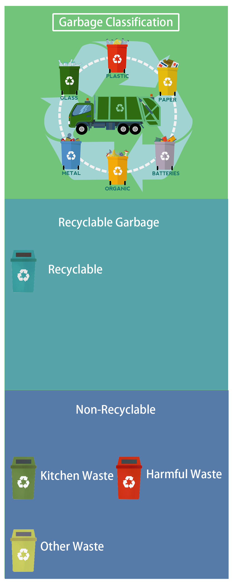

Grabage Classification

Plot
Waste sorting refers to a general term for a series of activities that convert waste into storage, sorting, and sorting and transporting them into public resources according to certain regulations or standards. The purpose of classification is to increase the resource value and economic value of waste, and strive to make the best use of it.
Garbage belongs to the public's private goods in the classified storage stage. After being distributed by the public, the garbage becomes a regional quasi-public resource of the community or community where the public is located. After the garbage is transferred to the garbage concentration point or the transfer station, it becomes a public resource without exclusion. Judging from the methods of classifying domestic waste in cities and towns at home and abroad, it is roughly classified according to the composition and production of garbage, combined with the utilization and treatment of local garbage.